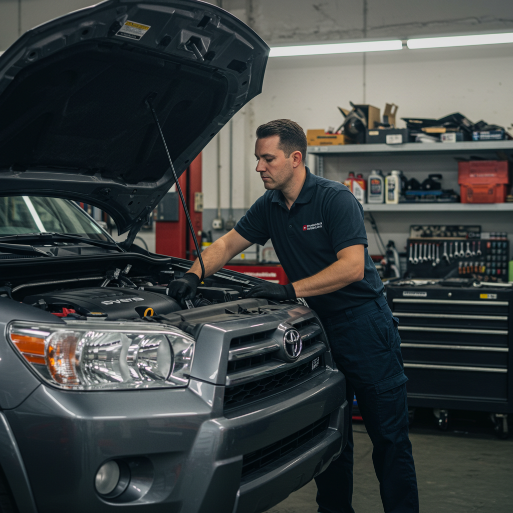
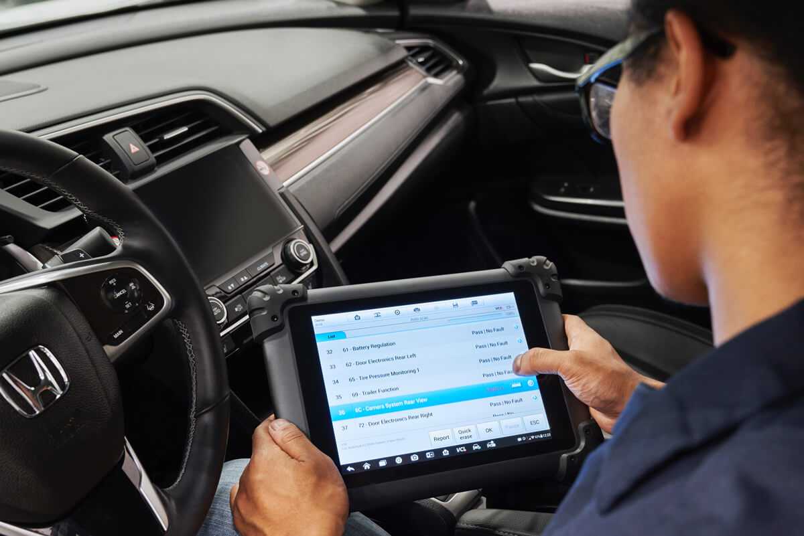
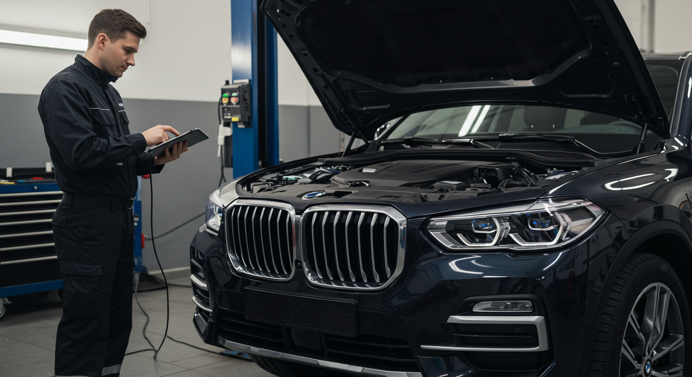
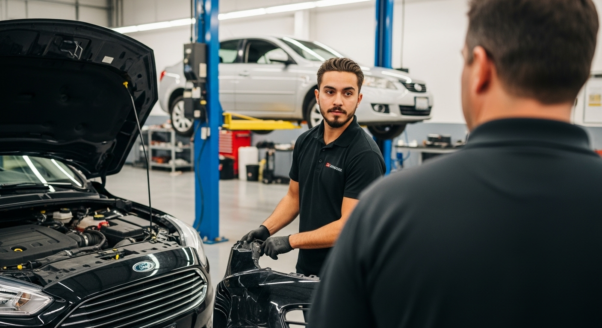

Servicios

Mantenimiento
Servicio preventivo y correctivo para transmisiones automáticas, asegurando su óptimo funcionamiento y durabilidad.

Diagnóstico
Identificación precisa de fallas mediante equipos especializados y personal capacitado.

Reparación
Reparación integral de transmisiones automáticas con repuestos originales y garantía.

Reemplazo
Sustitución profesional de componentes o transmisiones completas según diagnóstico.

Cambio de aceite
Cambio de aceite especializado para transmisiones automáticas, prolongando su vida útil.
Filtros
Reemplazo y mantenimiento de filtros para evitar daños y asegurar el rendimiento.
Diagnóstico especializado
Diagnóstico avanzado para casos complejos o vehículos de alta gama.
Preventivo
Servicios preventivos para anticipar y evitar fallas en la transmisión.